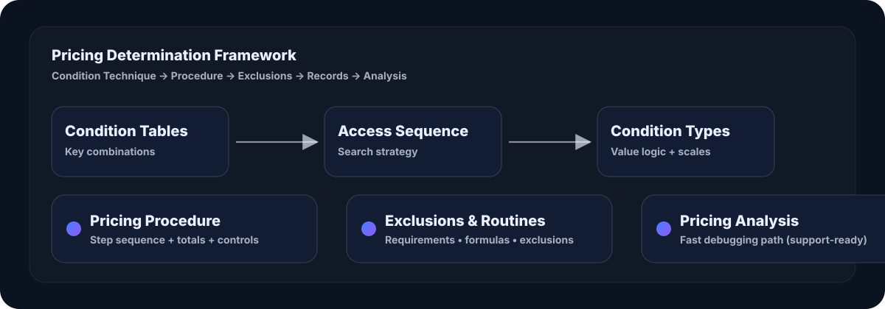
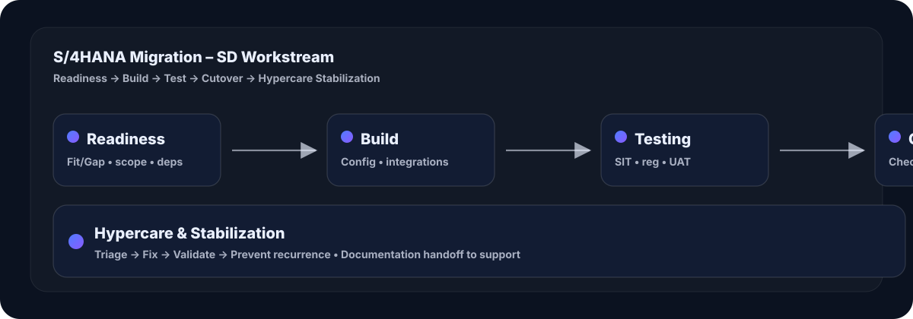

Order-to-Cash (OTC)
Orders, delivery, billing, FI, incompletion, partner/text/output, ATP & credit checks.
10+ years delivering SAP S/4HANA & ECC transformations across Order-to-Cash (OTC), Advanced Pricing, Billing, Logistics Execution (LE), and cross-module integration (SD-FI/MM/PP/WM).
Implementation • Enhancements • Support • Upgrades — across enterprise SD/LE with deep OTC ownership.
Configuration depth + delivery discipline across enterprise programs.
Orders, delivery, billing, FI, incompletion, partner/text/output, ATP & credit checks.
Condition technique, procedures, rebates, billing plans, account determination.
Shipping points, routes, scheduling, picking/packing, shipments & freight docs.
Readiness, alignment, testing, cutover planning, hypercare stabilization.
SD-FI/MM/PP/WM, IDocs, BAPIs, BADIs, support-ready enhancements.
ASAP phases, documentation, training, testing cycles, stakeholder communication.
Sanitized artifacts with clear outcomes and approach.
Migration blueprint, testing strategy, cutover plan and stabilization for SD workstream.
Support-ready approach to isolate pricing issues end-to-end.
Checklist for go-live readiness, dependencies, transports, validations and sign-off.
Visual proof of how I design enterprise SD outcomes.



Globally recognized SAP credentials validating S/4HANA Cloud Private Edition expertise (Sales + Procurement), plus continuous learning certificates.
Official SAP Global Certification validating S/4HANA Sales and end-to-end Order-to-Cash knowledge.
View official certificate →Issued Dec 23, 2025 • Valid until Dec 24, 2026
View official certificate →LinkedIn Learning • Certificate (PDF)
View certificate →LinkedIn Learning • Certificate (PDF)
View certificate →LinkedIn Learning • Certificate (PDF)
View certificate →LinkedIn Learning • Certificate (PDF)
View certificate →Best way to reach me is LinkedIn. I respond fast.